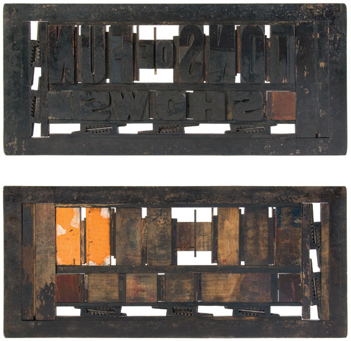

PARTIAL LETTERFORMS
SHOP EATS ITSELF
LOCK UPS
Setting wood type involves more than just letters. Framed inside an iron chase, spaced with thin strips of wood, and squeezed tight enough to move from the composing room to press, each form reveals a beautiful and strange world in reverse.
Shown here is the front and back of the same lock up for one of Globe's clients.

All content © Joe Galbreath